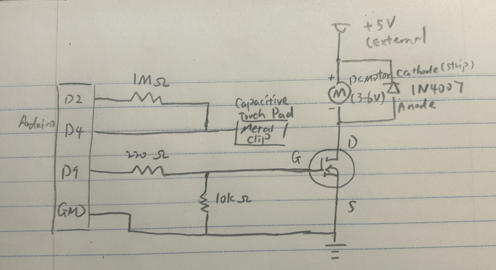
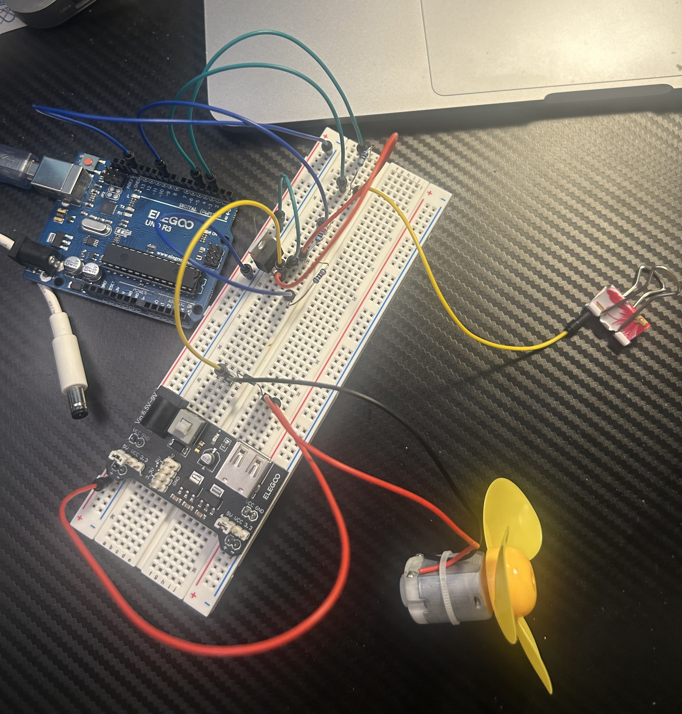
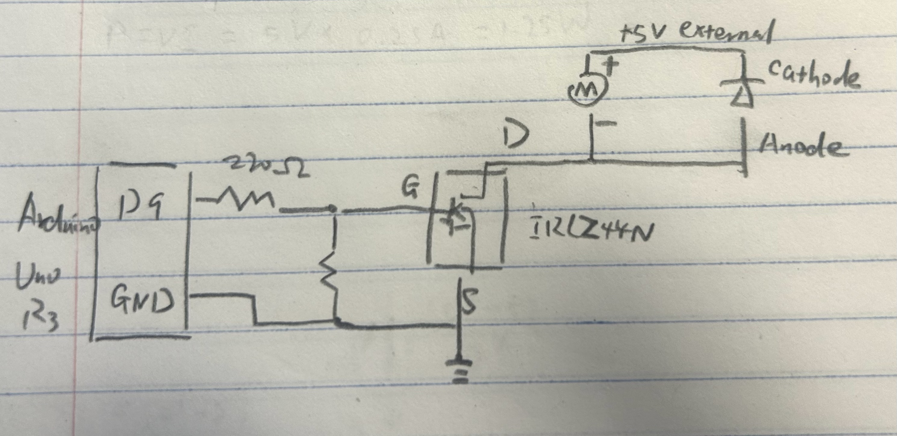
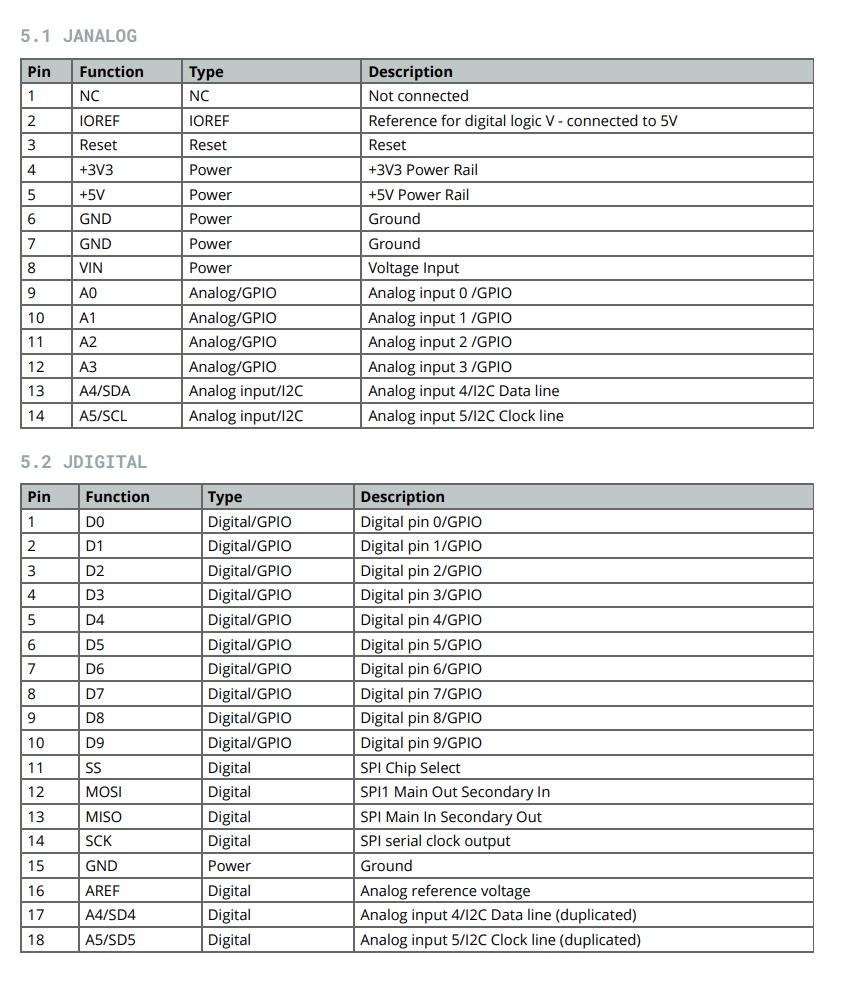
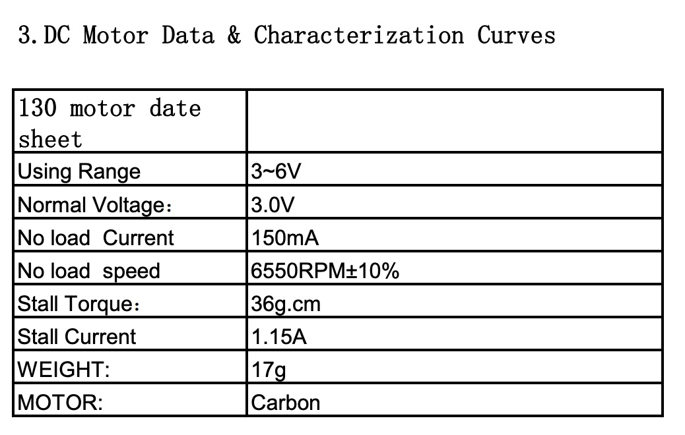
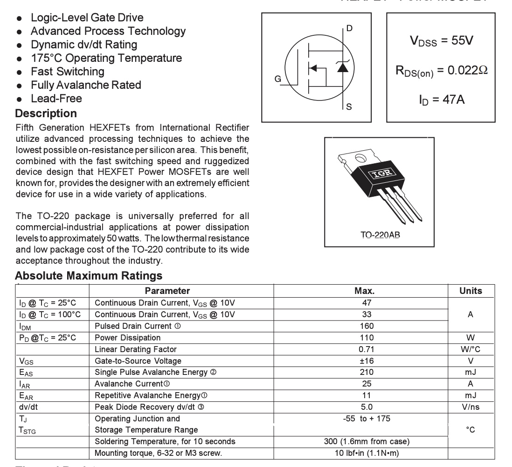
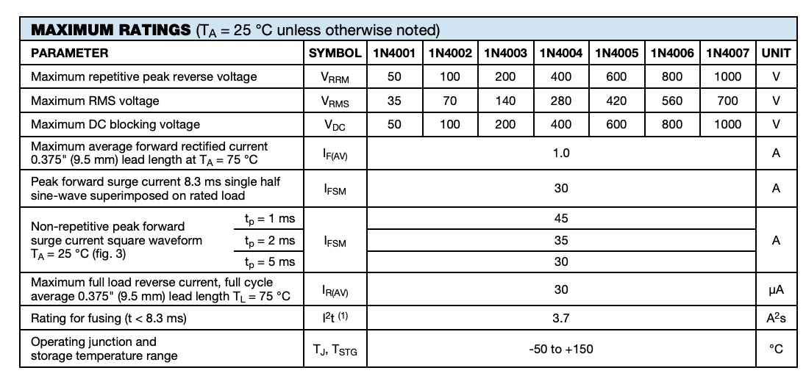
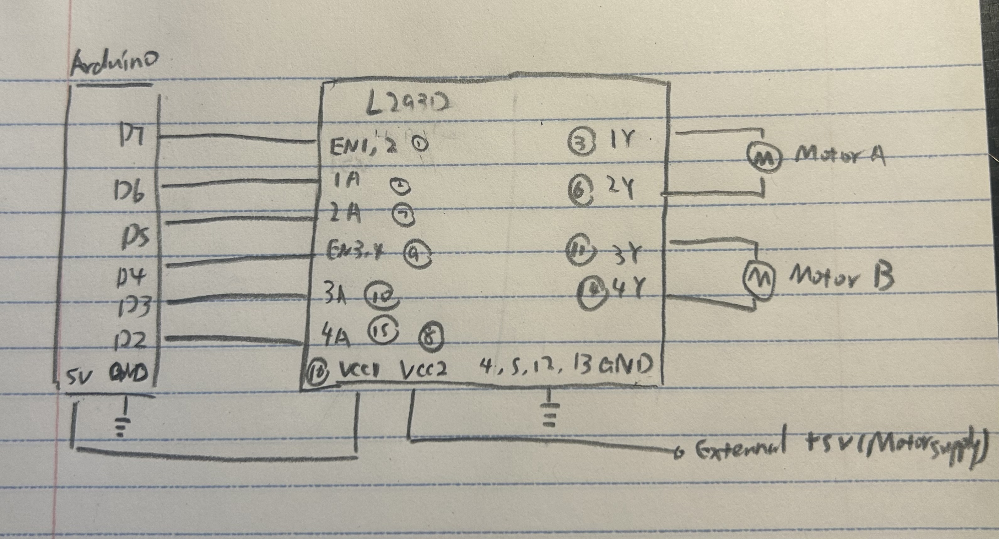

For this assignment, I used a capacitive touch sensor with a metal clip to control the speed of a DC motor. Each time I touch the clip, the motor switches to the next speed level: off, low, medium, high, and back to off. I used an IRLZ44N N-channel MOSFET to control the motor with an external 5V power supply. The CapacitiveSensor library detects touch, and analogWrite() controls the motor speed using PWM.


I used a 1 MOhm resistor between Arduino pins 2 and 4 for capacitive touch sensing, following the recommendation from Lecture 8. The metal clip is connected to pin 4. A 220 Ohm resistor is connected between pin 9 and the MOSFET Gate to limit transient gate-charging current. A 10 kOhm pull-down resistor connects the Gate to GND to keep the motor off when the Arduino pin is inactive. The motor is powered by an external 5V supply. A flyback diode is connected across the motor to protect the MOSFET from voltage spikes. The Arduino and external power supply share a common GND.
#include
// create a touch sensor using pins 2 and 4
CapacitiveSensor sensor = CapacitiveSensor(2, 4);
// set the motor PWM pin
int motor = 9;
// store four motor speed levels
int speeds[] = {0, 100, 180, 255};
// start with the motor off
int level = 0;
// remember the previous touch state
bool touched = false;
void setup() {
// keep the motor off during initialization
digitalWrite(motor, LOW);
// set the motor pin as an output, initially LOW
pinMode(motor, OUTPUT);
// start Serial Monitor
Serial.begin(9600);
}
// repeat continuously
void loop() {
// read the capacitive touch sensor
long value = sensor.capacitiveSensor(30);
// display the sensor reading
Serial.println(value);
// check if the sensor is touched
bool now = value > 1000;
// change speed only when a new touch begins
if (now && !touched) {
// move to the next speed level
level = (level + 1) % 4;
// control motor speed using PWM
analogWrite(motor, speeds[level]);
}
// save the current touch state
touched = now;
// wait briefly before the next reading.
delay(50);
}
I used a touch threshold of 1000 to distinguish between touched and untouched readings. The capacitiveSensor(30) function takes 30 samples for each reading. Each new touch increases the speed level by one. The PWM values are 0, 100, 180, and 255, corresponding to off, low, medium, and high. The motor stays at its current speed until the next touch.

When I touch the metal clip, the sensor reading increases. If the reading is above the threshold, the motor switches to the next speed level. The MOSFET controls the current through the motor based on the PWM signal from pin 9. After the highest speed, the next touch turns the motor off.
Pins 2 and 3 are the Drain and Source. According to the IRLZ44N datasheet, the maximum continuous Drain Current is 47 A at a case temperature of 25°C, or 33 A at 100°C (VGS = 10V).

I designed a circuit using an Arduino Uno R3, an IRLZ44N N-channel MOSFET, a DC motor, and a 1N4007 flyback diode. Arduino pin 9 controls the MOSFET through a 220 Ohm resistor, while a 10 kOhm pull-down resistor keeps the Gate LOW when the Arduino pin is inactive.
The motor is powered by an external 5V supply. The flyback diode is connected in parallel with the motor, with its cathode connected to +5V and its anode connected to the MOSFET Drain. This helps protect the circuit from voltage spikes when the motor is switched off.
Arduino Uno R3

The datasheet shows the digital pins, including D9, and the 5V and GND connections.
FT-DC-130D DC Motor

The motor has an operating voltage range of 3-6V, so the external 5V supply is within this range.
IRLZ44N MOSFET

The IRLZ44N is a logic-level N-channel MOSFET used to control the motor. Its Gate receives the Arduino control signal.
1N4007 Flyback Diode

The 1N4007 has a maximum average forward rectified current rating of 1A. It is connected across the motor to provide a path for inductive current when the MOSFET switches off.

I designed a circuit using an Arduino Uno, an L293D H-Bridge motor driver, and two DC motors. The L293D allows each motor to rotate forward or backward by changing the HIGH and LOW states of its inputs.
For Motor A, Arduino pins 7, 6, and 5 are connected to the L293D Enable, 1A, and 2A inputs. For Motor B, Arduino pins 4, 3, and 2 are connected to the second Enable, 3A, and 4A inputs. Both motors use an external 5V power supply.
// Set pins 2 through 7 as OUTPUT
set D2, D3, D4, D5, D6, D7 as OUTPUT
// Enable both motors
D7 = HIGH
D4 = HIGH
// FF: Both motors forward
D6 = HIGH
D5 = LOW
D3 = HIGH
D2 = LOW
wait 2 seconds
// BB: Both motors backward
D6 = LOW
D5 = HIGH
D3 = LOW
D2 = HIGH
wait 2 seconds
// FB: Motor A forward, Motor B backward
D6 = HIGH
D5 = LOW
D3 = LOW
D2 = HIGH
wait 2 seconds
// BF: Motor A backward, Motor B forward
D6 = LOW
D5 = HIGH
D3 = HIGH
D2 = LOW
wait 2 seconds
// Stop both motors
D7 = LOW
D4 = LOW
The code demonstrates four motor directions: FF (both forward), BB (both backward), FB (Motor A forward and Motor B backward), and BF (Motor A backward and Motor B forward). Each direction is controlled by changing the HIGH and LOW inputs of the L293D.